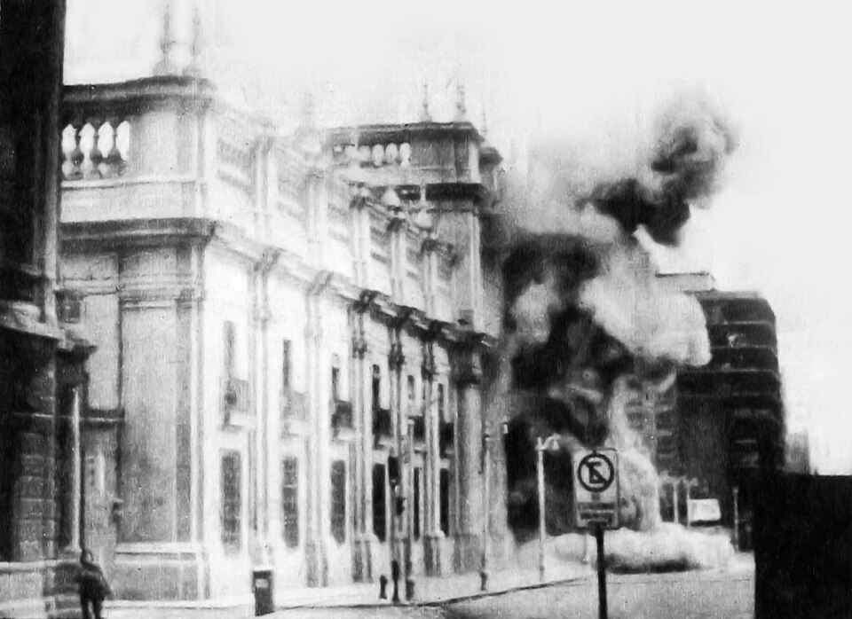

A42-POL-004 // HISTORICAL CLAIM REVIEW
Salvador Allende's Death During the 1973 Chilean Coup
Assessment: The best-supported forensic finding is that Allende took his own life during the coup.


The precise allegation
Chilean president Salvador Allende died inside La Moneda during the September 11, 1973 coup. The established forensic conclusion is suicide, not assassination; claims that coup forces killed him have circulated because the palace was under attack and early accounts were controlled by the new regime. The political responsibility of coup leaders for the circumstances is separate from the cause of death.
Chronology and political context
The armed forces attacked La Moneda after demanding Allende's resignation. Allende delivered a final radio address, remained in the palace, and died before troops entered. His body was examined under military rule. In 2011 Chilean authorities exhumed it and commissioned an independent forensic review, which concluded that he died by suicide using a rifle.
Primary historical record
The 2011 Chilean judicial investigation, forensic examinations, autopsy material, and eyewitness accounts support suicide. The independent team included international forensic experts. Earlier military-era findings were compromised by the dictatorship's control, but later exhumation and reanalysis provided physical evidence. The record does not establish that Allende was killed by coup soldiers.
Corroboration and contrary evidence
Historians compare the final broadcast, palace witnesses, and forensic evidence; the autopsy conclusion was confirmed in 2011. Some witnesses initially gave conflicting reports, understandable under bombardment and later repression. US involvement in destabilizing Allende's government is documented in declassified records, but that broader political intervention is not proof that US or Chilean agents killed him.
What remains uncertain
The exact minute-by-minute circumstances inside the palace are reconstructed from imperfect testimony, and the surviving physical evidence was examined years afterward. A suicide finding does not settle whether Allende faced coercion or whether he could have safely surrendered. It also does not mitigate the coup's subsequent killings, detention, and repression.
Calibrated verdict
The best-supported forensic finding is that Allende took his own life during the coup. This conclusion is strong, not absolute, and rests on later independent examination rather than the original regime's account. The coup's responsibility for creating the lethal circumstances is historical and political; it should not be transformed into an unsupported claim of direct execution.
What evidence could change this assessment
Any credible contrary case would require new forensic evidence, a previously unknown witness with independently corroborated detail, or authenticated orders showing an intentional killing. A transparent peer review of original autopsy materials could further test the 2011 conclusion. Evidence of US covert destabilization does not alone bear on the immediate cause of death.
Sources and source limits
- Chilean Judiciary — Allende exhumation and forensic inquiry reportingCourt information and case records support the 2011 investigation; broad portal requires locating specific archived documents.
- U.S. National Security Archive — Chile documentation projectDeclassified US records document intervention and context; they do not resolve the physical cause of Allende's death.
- Encyclopaedia Britannica — Salvador AllendeSummarizes the coup and death; tertiary account that does not replace forensic reports.